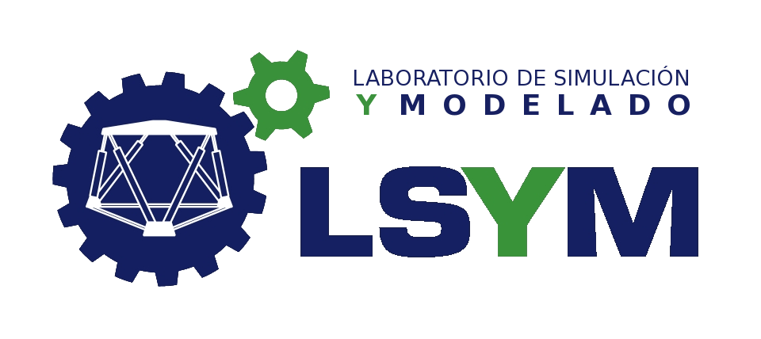
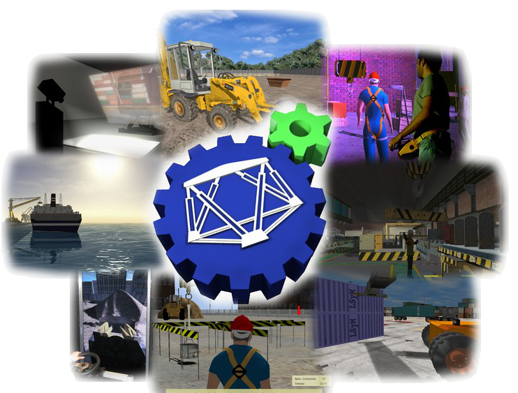
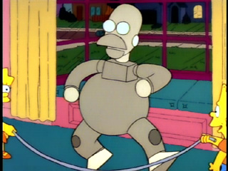

Bienvenidos
Me presento
- Carlos Reig Matut
- Desarrollador en LSyM por 2 años y medio
- Ingeniero informático por la ETSE-UV
 @unstatu
@unstatu
¿Qué es el LSyM?
El Laboratorio de Simulación y Modelado es un grupo de investigación perteneciente al IRTIC-UV.
Líneas de investigación
- Modelos físicos de interacción con terreno
- Sistemas de predicción de movimientos y ayuda al conductor
Proyectos
Simuladores tradicionales
- Simulador Forklift
- Simuladores portuarios
- Simulator Retroexcavadora
- Simulador grúa torre
- ...
Simuladores web
- Simulador de eficiencia energética
- Simulador de nivelación de terrenos
¿Quieres saber más?
Puedes encontrar todos nuestros simuladores en www.uv.es/lsym
¿Qué es un simulador?
Un simulador es una aplicación informática que se utiliza para la formación de operarios de máquinas reales.
¿Por qué se usan simuladores?
Basicamente existen tres motivos:
- No es peligroso para el usuario
- Podemos recrear situaciones críticas
Pero sobre todo...
Como cualquier aplicación informática, está compuesta por:
- Software
- Hardware
Veamos el software...
Las partes más importantes del software de un simulador son:
- Motor físico
- Motor gráfico
- Sistema de adquisición y gestión de eventos
- IA
- Gestión de memoria
- Librerías matemáticas
- etc.
- Sistema de instrucción
Por cierto...
Casi todo el código de los simuladores está escrito en C++

Pero en 3D
¿Os interesa?
Casi todos los que trabajamos aquí venimos de la ETSE
Ya está todo
¿Dudas?